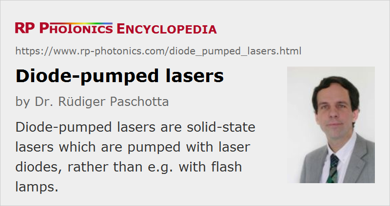

Diode-pumped Lasers
Acronym: DPSSL = diode-pumped solid-state laser
Definition: solid-state lasers which are pumped with laser diodes
More general terms: lasers
More specific terms: end-pumped lasers, side-pumped lasers
German: diodengepumpte Laser
How to cite the article; suggest additional literature
Author: Dr. Rüdiger Paschotta
Virtually all optically pumped lasers fall into one of two categories:
- lamp-pumped lasers, having some kind of gas discharge lamp (arc lamp or flash lamp) as the pump source
- diode-pumped lasers, pumped with some kind of laser diodes
This article treats the latter category, for which the term all-solid-state lasers is also used.
Types of Diode-pumped Lasers
Most diode-pumped lasers are solid-state lasers (DPSSL = DPSS lasers = diode-pumped solid-state lasers). These are either bulk lasers, using some kind of laser crystal or bulk piece of glass, or fiber lasers (although the term DPSSL is less common for fiber lasers). Both categories span a range of output powers from a few milliwatts to multiple kilowatts (→ high-power lasers).
Less common are optically pumped semiconductor lasers (particularly VECSELs = vertical external cavity surface-emitting lasers), and there are also some relatively exotic types of diode-pumped gas lasers, e.g. alkali vapor lasers.
Types of Laser Diodes for Diode Pumping
There are different types of laser diodes which can be used for diode pumping:
- Low-power lasers (up to roughly 200 mW) can be pumped with small edge-emitting laser diodes. These exhibit a diffraction-limited beam quality and make it fairly easy to achieve the same for the solid-state laser.
- Broad area laser diodes typically generate several watts and are suitable for pumping solid-state lasers with output powers up to a few watts. Their beam quality is substantially asymmetric, but normally still sufficient for achieving a diffraction-limited laser output without using complicated optics.
- High-power diode bars emit tens of watts (or even > 100 W), allowing for higher output powers, particularly when several bars are combined. Their beam quality is strongly asymmetric and fairly poor, so that their radiance (brightness) is much lower than that of lower-power diodes. Various types of beam shapers are used to symmetrize the beam quality. This makes it easier either to pump a bulk laser or to couple the light into a fiber.
- For the highest powers, diode stacks are often used. These have a still worse beam quality and lower brightness, but can provide multiple kilowatts.
In most cases, the pump diodes are operated continuously. This applies to all continuous-wave and mode-locked lasers, and also to many Q-switched lasers. However, quasi-continuous-wave operation with higher peak power for limited time intervals (e.g. 100 μs) is sometimes used for Q-switched lasers with a high pulse energy and low pulse repetition rate.
Depending on the type of laser diode, different kinds of pump optics are used. It is also possible to use fiber-coupled diode lasers, which make it possible to separate the actual laser head from another package containing the pump diodes, so that the laser head can become very compact.
Advantages of Diode Pumping
The main advantages of diode pumping are:
- A high electrical-to-optical efficiency of the pump source (of the order of 50%) leads to a high overall power efficiency (→ wall-plug efficiency) of the laser. As a consequence, small power supplies are needed, and both the electricity consumption and the cooling demands are drastically reduced, compared with those for lamp-pumped lasers.
- The narrow optical bandwidth of diode lasers makes it possible to pump directly certain transitions of laser-active ions without losing power in other spectral regions. It thus also contributes to a high efficiency.
- Although the beam quality of high-power diode lasers is not perfect, it often allows for end pumping of lasers with very good overlap of laser mode and pump region, leading to high beam quality and power efficiency. In the domain of slab lasers, it allows edge pumping instead of face pumping, which brings important advantages.
- Diode-pumped low-power lasers can be pumped with diffraction-limited laser diodes. This allows the construction of very low-power lasers with reasonable power efficiency, i.e., with a very small electrical pump power, as is important for battery-powered devices.
- The lifetime of laser diodes is long compared with that of discharge lamps: typically many thousands of hours, often even well above 10 000 hours. However, various factors can lead to drastically reduced lifetimes. The exchange of laser diodes is also much more costly than that of discharge lamps.
- The compactness of the pump source, the power supply and the cooling arrangement makes the whole laser system much smaller and easier to use.
- Diode pumping makes it possible to use a very wide range of solid-state gain media for different wavelength regions, including e.g. upconversion lasers. For many solid-state gain media, the lower brightness of discharge lamps would not be sufficient.
- The low intensity noise of laser diodes leads to low noise of the diode-pumped laser.
Achievements
The benefits of diode pumping have lead to amazing achievements. Some examples are:
- There are miniature solid-state lasers with excellent efficiency, beam quality, spectral purity, and stability. Some of those may even be battery-powered.
- Diode-pumped high-power solid-state lasers can deliver kilowatt output powers with fairly high beam quality. This applies particularly to thin-disk lasers, but also to high-power fiber lasers and amplifiers.
- Diode pumping is also essential for a large variety of mode-locked lasers, generating e.g. up to 80 W of average output power in sub-picosecond pulses, or picosecond pulses for telecom applications with a pulse repetition rate up to 50 GHz.
Limitations
In the early years of diode pumping, the output powers achievable were very limited – smaller than those of lamp-pumped lasers. In the meantime, however, high-power diode bars and diode stacks have become very powerful, and the highest output powers are now usually achieved with diode pumping.
The main disadvantage of diode pumping (as compared with lamp pumping) is the significantly higher cost per watt of pump power. This is severe for high powers. For this reason, lamp pumping is still used in cases where high powers are needed, particularly when the power is used only for short times. For example, lamp-pumped Q-switched Nd:YAG lasers are still widely used for laser marking, and will not soon be replaced with diode-pumped lasers.
Laser diodes are electrically less robust than discharge lamps. They may e.g. be quickly destroyed by excessive drive currents, or by electrostatic discharges. In conjunction with properly designed electronics, however, this should not happen. Problems can also arise from optical feedback.
Applications
Diode-pumped solid-state lasers have a very wide range of applications. Indeed, they are used in all of the areas mentioned in the article on laser applications.
Suppliers
The RP Photonics Buyer's Guide contains 115 suppliers for diode-pumped lasers. Among them:
Questions and Comments from Users
Here you can submit questions and comments. As far as they get accepted by the author, they will appear above this paragraph together with the author’s answer. The author will decide on acceptance based on certain criteria. Essentially, the issue must be of sufficiently broad interest.
Please do not enter personal data here; we would otherwise delete it soon. (See also our privacy declaration.) If you wish to receive personal feedback or consultancy from the author, please contact him e.g. via e-mail.
By submitting the information, you give your consent to the potential publication of your inputs on our website according to our rules. (If you later retract your consent, we will delete those inputs.) As your inputs are first reviewed by the author, they may be published with some delay.
Bibliography
| [1] | R. J. Keys, “Injection luminescent pumping of CaF2:U3+ with GaAs diode lasers”, Appl. Phys. Lett. 4, 50 (1964), doi:10.1063/1.1753958 (first diode-pumped laser) |
| [2] | R. L. Byer, “Diode laser-pumped solid-state lasers”, Science 239, 742 (1988), doi:10.1126/science.239.4841.742 |
| [3] | D. W. Hughes and J. R. M. Barr, “Laser diode pumped solid state lasers”, J. Phys. D: Appl. Phys. 25 (4), 563 (1992), doi:10.1088/0022-3727/25/4/001 |
| [4] | C. A. Wang and S. H. Groves, “New materials for diode laser pumping of solid-state lasers”, IEEE J. Quantum Electron. 28 (4), 942 (1992), doi:10.1109/3.135213 |
| [5] | D. C. Hanna and W. A. Clarkson, “A review of diode-pumped lasers”, in Advances in Lasers and Applications (eds. D. M. Finlayson and B. Sinclair), Taylor & Francis, New York (1999) |
| [6] | W. Koechner, Solid-State Laser Engineering, 6th edn., Springer, Berlin (2006) |
See also: lasers, laser crystals, solid-state lasers, all-solid-state lasers, lamp-pumped lasers, laser diodes, end pumping, side pumping, high-power lasers, rod lasers, slab lasers, YAG lasers, fiber lasers, upconversion lasers, gain media
and other articles in the category lasers

This encyclopedia is authored by Dr. Rüdiger Paschotta, the founder and executive of RP Photonics Consulting GmbH. How about a tailored training course from this distinguished expert at your location? Contact RP Photonics to find out how his technical consulting services (e.g. product designs, problem solving, independent evaluations, training) and software could become very valuable for your business!
|  |
If you like this page, please share the link with your friends and colleagues, e.g. via social media:
These sharing buttons are implemented in a privacy-friendly way!